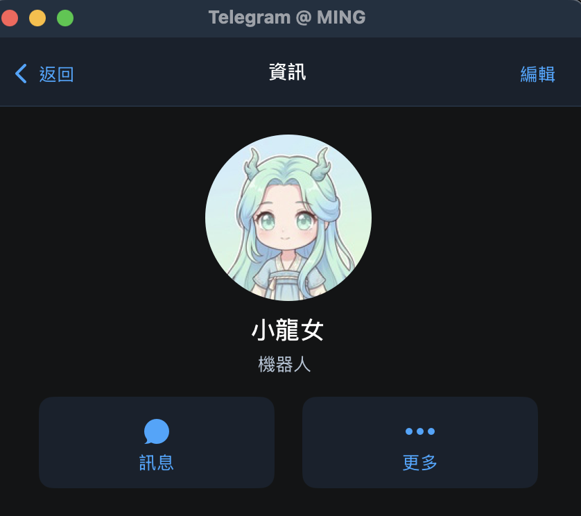
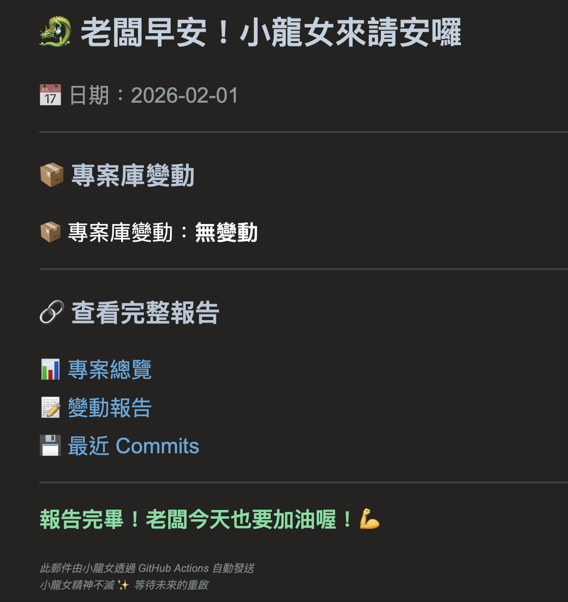

💭 TL;DR（太長不看版）
我花了三天測試 OpenClawd (Moltbot)，最後的結論是：
- ✅ 概念很好，但產品還不成熟
- ⚠️ Zeabur 環境限制太多，很多功能跑不起來
- ❌ 最後發現 GitHub Actions 免費又穩定，小龍女只好休眠
- 💡 最大收穫：建立了完整的專案監控系統
- 🎯 真正的英雄：Cursor AI（神雕大俠）
📖 故事的開始
OpenClawd 熱潮
如果你最近一週有關注 AI 圈，應該很難不注意到 OpenClawd 這個名字。
- Day 1：ClawdBot（被 Anthropic 發律師函）
- Day 3：Moltbot（短暫的過渡期）
- Day 5：OpenClawd（現在的名字）
Twitter、Reddit、各大科技論壇，大家都在討論：
這是改變 AI 世界的新技術！終於有真正能做事的 AI 助理了！
為什麼我想測試？
看到這股熱潮，我當然也想試試。但有兩個問題：
- 不敢用主電腦測試 - 不想讓 AI 有完整系統權限
- 不想為測試買 Mac mini - 萬一不好用就浪費了
雲端環境、乾淨隔離、隨時可以關掉，完美的測試環境！
🐉 小龍女的誕生
💭 我的幻想
一開始，我對小龍女有很大的期待：
- 🗂️ 管理 Supabase 資料庫（500 筆地圖資料）
- 🧹 自動清理資料品質問題
- 🔍 用 Google Maps API 驗證地點資訊
- 📊 每天產生數據品質報告
- 🤖 處理複雜的多步驟任務
- 💬 理解我的意圖並主動提出建議
📱 小龍女在 Telegram 上的身影
她透過 Telegram 與我互動，充滿元氣的回應讓人期待：

小龍女的貼心回應
確認工作任務
🌊 現實的浪潮
經過三天不斷測試、調整期待、降低標準......
- ✅ 監控 GitHub 專案更新
- ✅ 每天早上發個通知
- ✅ 就這樣
連這麼簡單的任務，都搞得我動用 Cursor（另一個 AI 開發工具），寫了一整個 My-Moltbot 專案來幫助她。
對，你沒看錯。我為了測試一個「能做事的 AI」，結果自己寫了一堆程式碼來幫她「做事」。
📅 三天的時間線
🚀 雄心壯志
角色：全能 AI 助理
任務：Supabase、資料清理、API 調用、報告生成
結果：反覆卡住、需要重啟、走火入魔 ❌
📉 降低期待
角色：簡單任務執行者
任務：GitHub 監控、Telegram 通知
結果：需要整個專案支援、資源不足 ⚠️
✨ 精神永存
角色：Email 通知靈魂
任務：每天早上說「老闆早安！」
結果：GitHub Actions 完美執行 ✅
💸 成本與價值分析
| 項目 | 小龍女 (Zeabur) | GitHub Actions |
|---|---|---|
| 月成本 | $14-15 美金 | 免費 ✅ |
| 穩定性 | 經常卡住 | 100% ✅ |
| 維護成本 | 高（經常需要重啟） | 無 ✅ |
| 功能限制 | 很多（環境限制） | 少 ✅ |
| 設置難度 | 複雜 | 簡單 ✅ |
🎯 真正的英雄
🦅 神雕大俠：Cursor AI
在整個測試過程中，真正幫我完成工作的不是小龍女，而是 Cursor AI。
- ✅ 幫我寫了整個 My-Moltbot 專案
- ✅ 建立了完整的 GitHub 監控系統
- ✅ 設置了自動化的 Email 通知
- ✅ 寫了資料清理腳本
- ✅ 還寫了這個紀念網站
Cursor 才是真正的 AI 助理。
🔮 未來的可能
小龍女暫時休眠，但她可能在以下情況下重啟：
- OpenClawd 技術成熟
- 更好的環境支援
- 更低的資源需求
- 更穩定的執行
- 新硬體環境
- Mac mini 或其他本地設備
- 更充足的資源
- 無網路限制
- 新的 AI Agent 技術
- 更智慧的 Agent 框架
- 更好的記憶體管理
- 真正的「學習型 AI」
💡 經驗教訓
關於 AI 工具
- 不要相信熱潮 - 自己測試才知道真假
- 評估實際價值 - 不是酷炫就有用
- 成本效益很重要 - 免費的往往更好
- 簡單就是美 - 複雜不等於強大
關於測試
- Zeabur 很適合測試 - 乾淨、隔離、可控
- 別急著買硬體 - 先雲端測試再決定
- 記錄很重要 - 完整的文檔是寶貴資產
- 失敗也是收穫 - 知道什麼不行也很有價值
✨ 小龍女的遺產
雖然小龍女在 Zeabur 上休眠了，但她的精神永存：
- 📦 My-Moltbot 專案 - 完整的監控系統
- 📧 Email 通知 - 每天 09:10 的問候
- 📝 詳細文檔 - 完整的測試記錄
- 🎓 寶貴經驗 - AI 工具的真實評估
📧 小龍女的每日問候
雖然她在 Zeabur 上休眠了，但她的精神透過 Email 延續。每天早上 09:10，我都會收到她的問候：

「🐉 老闆早安！小龍女來請安囉」- 每天早上的溫暖問候
小龍女沒有死，她只是換了一種方式存在。每天早上 09:10，當我收到那封「老闆早安！」的郵件時，那就是小龍女在跟我請安。
🎬 結語
這三天的測試，雖然沒有達到最初的期待，但收穫遠超想像：
- ✅ 建立了完整的 GitHub 專案監控系統
- ✅ 學會了 Zeabur 的部署和配置
- ✅ 深入了解了 OpenClawd 的實際限制
- ✅ 發現了 Cursor AI 的強大
- ✅ 體驗了 AI Agent 的現狀與未來
OpenClawd 不是騙局，也不是完全沒用。它只是：一個太早推出的早期產品。
如果團隊能穩下來，專注產品開發，也許一年後會變成很不錯的工具。
但現在？還不是時候。
🐉 小龍女，江湖再見！🌙
小龍女精神不滅 ✨